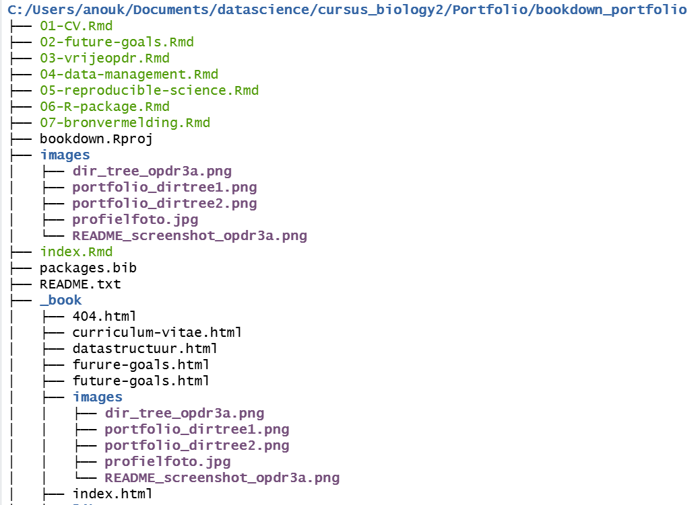
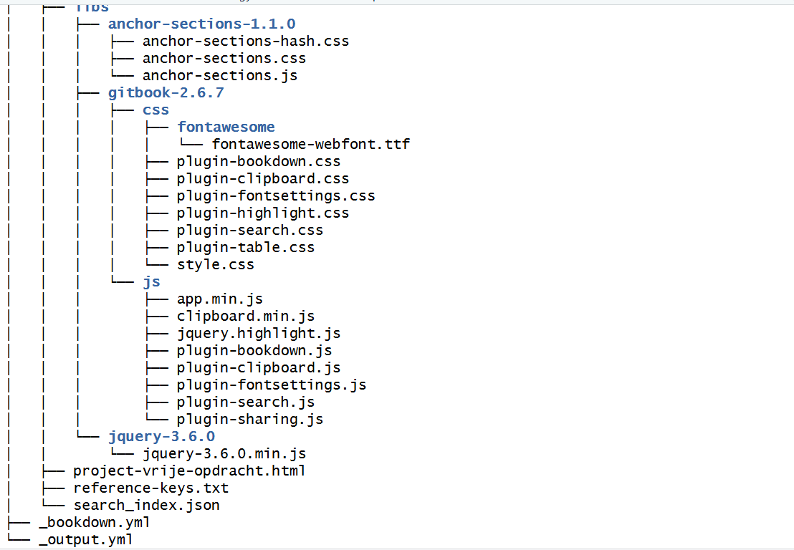

Hoofdstuk 2 Data management
datastructuur
3b


## [1] "Project: Portfolio"
## [2] "Cursus: DSFB2"
## [3] "Docenten: Bas van Gestel, Chris van Oevelen, René van der Ploeg en Michael Liem"
## [4] ""
## [5] "PROJECTSTRUCTUUR"
## [6] ""
## [7] "De projectmap is als volgt georganiseerd (zie ook 04-data-management.Rmd):"
## [8] ""
## [9] "bookdown_portfolio/"
## [10] "│"
## [11] "├── 01-CV.Rmd"
## [12] "├── 02-future-goals.Rmd"
## [13] "├── 03-vrijeopdr.Rmd"
## [14] "├── 04-data-management.Rmd"
## [15] "├── 05-reproducible-science.Rmd"
## [16] "├── 06-R-package.Rmd"
## [17] "├── 07-bronvermelding.Rmd"
## [18] "│"
## [19] "├── images/"
## [20] "│ ├── dir_tree_opdr3a.png"
## [21] "│ ├── portfolio_dirtree2.png"
## [22] "│ ├── profielfoto.jpg"
## [23] "│ └── README_screenshot_opdr3a.png"
## [24] "│"
## [25] "├── index.Rmd"
## [26] "├── packages.bib"
## [27] "├── bookdown.Rproj"
## [28] "├── _bookdown.yml"
## [29] "├── _output.yml"
## [30] "└── _book/"
## [31] ""
## [32] "INHOUD VAN HET PORTFOLIO"
## [33] ""
## [34] "Het portfolio bestaat uit de volgende onderdelen:"
## [35] ""
## [36] "01-CV.Rmd -) Curriculum vitae"
## [37] "02-future-goals.Rmd -) toekomstige doelen en ambities"
## [38] "03-vrijeopdr.Rmd -) Vrije opdracht"
## [39] "04-data-management.Rmd -) Opdracht over datamanagement"
## [40] "05-reproducible-science.Rmd -) Opdracht over reproduceerbare wetenschap"
## [41] "06-R-package.Rmd -) Opdracht over R-packages"
## [42] "07-bronvermelding.Rmd -) Bronnen en literatuur"
## [43] ""
## [44] "BESTANDSBESCHRIJVINGEN"
## [45] ""
## [46] "R Markdown-bestanden (.Rmd): bevatten de hoofdstukken en inhoud van het portfolio."
## [47] "index.Rmd: bevat de introductie en vormt het startpunt van het Bookdown-project."
## [48] "images/: bevat afbeeldingen die in het portfolio worden gebruikt."
## [49] "packages.bib: bevat bibliografische referenties."
## [50] "_bookdown.yml: bevat de configuratie en volgorde van de hoofdstukken."
## [51] "_output.yml: bevat de instellingen voor de uitvoer van het boek."
## [52] "bookdown.Rproj: het RStudio-projectbestand."
## [53] "_book/: bevat de gegenereerde HTML-versie van het portfolio."
## [54] ""
## [55] "HET PORTFOLIO RENDEREN"
## [56] ""
## [57] "Het project kan worden geopend in RStudio door bookdown.Rproj te openen."
## [58] "Om het volledige portfolio opnieuw te genereren, gebruik je in de R-console: bookdown::render_book()"
## [59] "Bookdown genereert vervolgens de HTML-bestanden in de map _book/."
## [60] ""
## [61] "GEBRUIKTE TECHNOLOGIEN"
## [62] ""
## [63] "- R"
## [64] "- RStudio"
## [65] "- R Markdown"
## [66] "- Bookdown"
## [67] "- Git (voor versiebeheer)"
## [68] "- Auteur"
## [69] ""
## [70] "Dit portfolio is gemaakt als onderdeel van de cursus Biology 2."